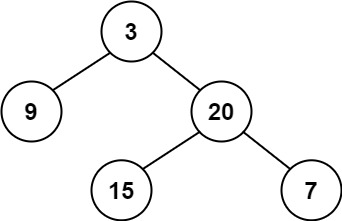
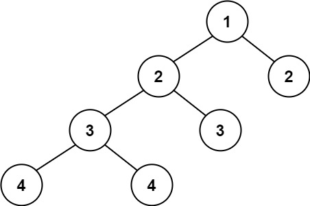
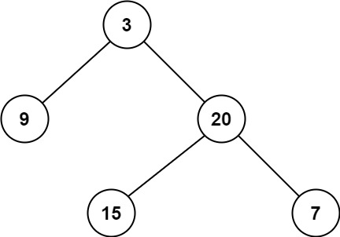
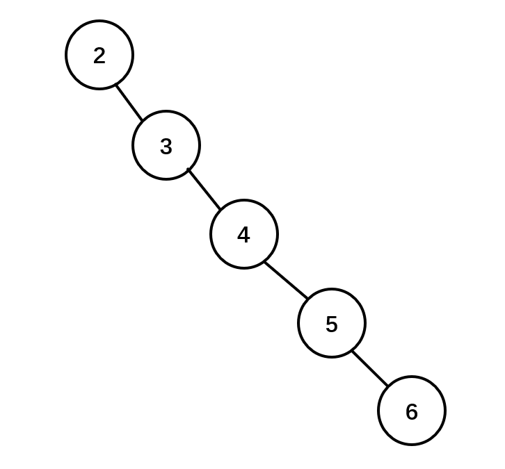
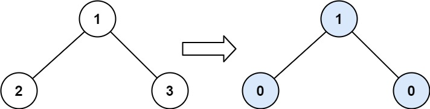
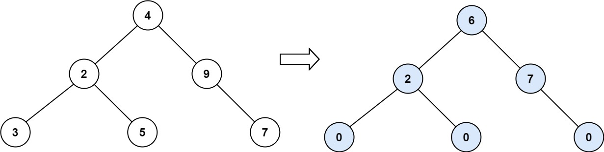
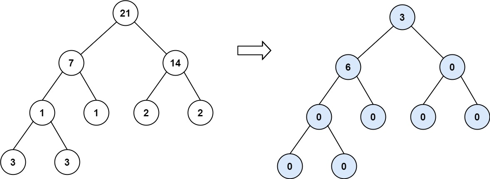
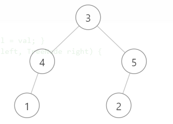
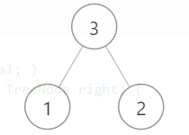
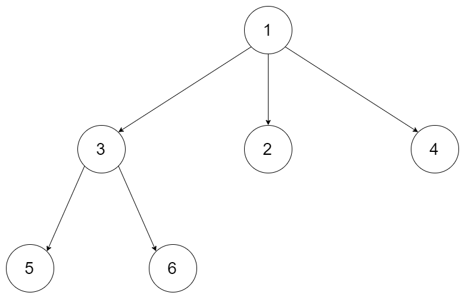

本篇是leetcode树Tag的学习记录
所有题目来自于 树
题目 给定两个二叉树，编写一个函数来检验它们是否相同。
如果两个树在结构上相同，并且节点具有相同的值，则认为它们是相同的。
示例 1:
[1,2,3], [1,2,3]
示例 2:
[1,2], [1,null,2]
示例 3:
[1,2,1], [1,1,2]
解题思路 完成这题的思路就是遍历一下这两棵树，如果遍历过程中两个树中同一个位置的每个结点都相同，则说明这两棵树是相同的
对于遍历的方法有很多，比如深度优先、广度优先
解题代码深度优先——递归 1 2 3 4 5 6 7 8 9 10 11 12 13 14 class Solution public boolean isSameTree (TreeNode p, TreeNode q) if (p == null && q == null ){ return true ; }else if (p == null || q == null ) { return false ; }else if (p.val != q.val){ return false ; }else { return isSameTree(p.left,q.left) && isSameTree(p.right,q.right); } } }
解题代码广度优先——队列 1 2 3 4 5 6 7 8 9 10 11 12 13 14 15 16 17 18 19 20 21 22 23 24 25 26 27 class Solution public boolean isSameTree (TreeNode p, TreeNode q) if (p == null ^ q == null ) return false ; if (p==null && q == null ) return true ; Deque<TreeNode> queue1 = new LinkedList<>(); Deque<TreeNode> queue2 = new LinkedList<>(); queue1.offer(p); queue2.offer(q); while (!queue1.isEmpty() && !queue2.isEmpty()){ TreeNode t1 = queue1.poll(); TreeNode t2 = queue2.poll(); if (t1.val != t2.val) return false ; TreeNode l1 = t1.left; TreeNode l2 = t2.left; if (l1 == null ^ l2 == null ) return false ; if (l1 != null ) queue1.offer(l1); if (l2 != null ) queue2.offer(l2); TreeNode r1 = t1.right; TreeNode r2 = t2.right; if (r1 == null ^ r2 == null ) return false ; if (r1 != null ) queue1.offer(r1); if (r2 != null ) queue2.offer(r2); } return queue1.isEmpty() && queue2.isEmpty(); } }
题目 给定一个二叉树，检查它是否是镜像对称的。
例如，二叉树 [1,2,2,3,4,4,3] 是对称的。
但是下面这个 [1,2,2,null,3,null,3] 则不是镜像对称的:
解题思路1 通过递归的方法，每一个小的迭代解决的问题是两个指针指向的值是否相等，如果相等的话，则判断一个指针的左子树是否和另一个指针的右子树相等，一个指针的右子树是否和另一个指针的左子树相等
解题代码1 1 2 3 4 5 6 7 8 9 10 11 12 13 class Solution public boolean isSymmetric (TreeNode root) if (root == null ) return true ; return check(root.left,root.right); } public boolean check (TreeNode p, TreeNode q) if (p == null && q == null ) return true ; if (p == null || q == null ) return false ; return p.val==q.val && check(p.left,q.right) && check(p.right,q.left); } }
解题思路2 借助一个队列，通过迭代的方式解决这题。但本质的思路跟解题思路1是类似的，即判断当前的两个结点的值是否一样，如果一样则接下来需要保证下一次判断的时候，是判断一个是左子树、另一个是右子树。或者反过来。
解题代码2 1 2 3 4 5 6 7 8 9 10 11 12 13 14 15 16 17 18 19 class Solution public boolean isSymmetric (TreeNode root) Queue<TreeNode> queue = new LinkedList<>(); queue.offer(root); queue.offer(root); while (!queue.isEmpty()){ TreeNode p = queue.poll(); TreeNode q = queue.poll(); if (p == null && q == null ) continue ; if (p == null || q == null || p.val != q.val) return false ; queue.offer(p.left); queue.offer(q.right); queue.offer(p.right); queue.offer(q.left); } return true ; } }
题目 给定一个二叉树，找出其最大深度。
二叉树的深度为根节点到最远叶子节点的最长路径上的节点数。
说明: 叶子节点是指没有子节点的节点。
示例：
解题思路 可以通过递归的思路，空结点为0，非空的话，则是当前结点的1，加上左右子树中，深度最大的那个数。
也可以 用迭代的方式，通过广度优先去遍历每一层，每一层加一，同时对于每一层的迭代中，需要将该层的所有结点从队列中取出，再放入其左右子树，才能判断一层是否遍历完。
解题代码递归 1 2 3 4 5 6 7 8 class Solution public int maxDepth (TreeNode root) if (root == null ) return 0 ; int left = maxDepth(root.left); int right = maxDepth(root.right); return 1 + (left>right?left:right); } }
精简版
1 2 3 public int maxDepth (TreeNode root) return root == null ? 0 : Math.max(maxDepth(root.left),maxDepth(root.right))+1 ; }
解题代码迭代 1 2 3 4 5 6 7 8 9 10 11 12 13 14 15 16 17 18 19 class Solution public int maxDepth (TreeNode root) if (root == null ) return 0 ; Queue<TreeNode> queue = new LinkedList<>(); queue.offer(root); int deep = 0 ; while (!queue.isEmpty()){ int size = queue.size(); while (size-- > 0 ){ TreeNode t = queue.poll(); if (t.left != null ) queue.offer(t.left); if (t.right != null ) queue.offer(t.right); } deep++; } return deep; } }
题目 给定一个二叉树，返回其节点值自底向上的层次遍历。 （即按从叶子节点所在层到根节点所在的层，逐层从左向右遍历）
例如：
解题思路 对于这题实现的思路主要是参考于”104. 二叉树的最大深度“中广度优先的方法，将每一次在一层的遍历的数字储存在一块，最后要么通过栈的方式逆输出，或者直接通过链表插入头的方式输出。或者最后翻转一遍数组或链表
LinkedList实现了addFirst
1 2 3 public void addFirst (E e) linkFirst(e); }
List接口中有声明void add(int index, E element);的方法，所以可以直接add(0,val)的方式插入
解题代码1.0 1 2 3 4 5 6 7 8 9 10 11 12 13 14 15 16 17 18 19 20 21 class Solution public List<List<Integer>> levelOrderBottom(TreeNode root) { LinkedList<List<Integer>> ans = new LinkedList<>(); if (root == null ) return ans; Queue<TreeNode> queue = new LinkedList<>(); queue.offer(root); while (!queue.isEmpty()){ int size = queue.size(); List<Integer> curLayer = new LinkedList<>(); while (size-->0 ){ TreeNode temp = queue.poll(); curLayer.add(temp.val); if (temp.left != null ) queue.offer(temp.left); if (temp.right != null ) queue.offer(temp.right); } ans.addFirst(curLayer); } return ans; } }
解题代码1.1 1 2 3 4 5 6 7 8 9 10 11 12 13 14 15 16 17 18 19 20 21 class Solution public List<List<Integer>> levelOrderBottom(TreeNode root) { List<List<Integer>> ans = new LinkedList<>(); if (root == null ) return ans; Queue<TreeNode> queue = new LinkedList<>(); queue.offer(root); while (!queue.isEmpty()){ int size = queue.size(); List<Integer> curLayer = new LinkedList<>(); while (size-->0 ){ TreeNode temp = queue.poll(); curLayer.add(temp.val); if (temp.left != null ) queue.offer(temp.left); if (temp.right != null ) queue.offer(temp.right); } ans.add(0 ,curLayer); } return ans; } }
题目 将一个按照升序排列的有序数组，转换为一棵高度平衡二叉搜索树。
本题中，一个高度平衡二叉树是指一个二叉树每个节点 的左右两个子树的高度差的绝对值不超过 1。
示例:
解题思路 看到这题就想起来之前做链表专题有一题类似的“109. 有序链表转换二叉搜索树 ”
其中我写的”解题思路1“就是先将链表转成数组再进行转换。
解题代码 1 2 3 4 5 6 7 8 9 10 11 12 13 14 class Solution public TreeNode sortedArrayToBST (int [] nums) return subArray2BST(nums,0 ,nums.length); } public TreeNode subArray2BST (int [] nums,int left, int right) if (left >= right) return null ; int mid = (left + right) >> 1 ; TreeNode root = new TreeNode(nums[mid]); root.left = subArray2BST(nums,left,mid); root.right = subArray2BST(nums,mid+1 ,right); return root; } }
题目 给定一个二叉树，判断它是否是高度平衡的二叉树。
本题中，一棵高度平衡二叉树定义为：
一个二叉树每个节点 的左右两个子树的高度差的绝对值不超过 1 。
示例 1：

示例 2：

示例 3：
解题思路 这题有很明显的递归的影子
如果一棵树是高度平衡二叉树，则它子树也是高度平衡二叉树。
因此我们可以通过递归，先判断一个结点的左右子树是否都为高度平衡二叉树，然后再看加上当前结点和左右子树构成更大的树，是否为高度平衡二叉树
解题代码 1 2 3 4 5 6 7 8 9 10 11 12 13 14 15 16 17 class Solution public boolean isBalanced (TreeNode root) if (root == null ) return true ; TreeNode left = root.left; TreeNode right = root.right; if (!isBalanced(left) || !isBalanced(right)) return false ; else if (Math.abs(getHeight(left) - getHeight(right))>1 ) return false ; else return true ; } public int getHeight (TreeNode root) if (root == null ) return 0 ; int left = getHeight(root.left); int right = getHeight(root.right); return Math.max(left,right) + 1 ; } }
题目 给定一个二叉树，找出其最小深度。
最小深度是从根节点到最近叶子节点的最短路径上的节点数量。
说明：叶子节点是指没有子节点的节点。
示例 1：

示例 2：

解题思路1 注意这题有个坑
题目的意思并不是 单纯的求出左右两个子树的最短路径。
题目意思是到叶节点 的最短路径，而叶节点的定义为：左右两个子树均为空 。
所以当一个根节点中，假设其左子树为空，右子树不为空。不能认定为其长度为空。长度应该是右子树的最短路径。
总之，这题想表达的意思是：不是 到空结点 的最短路径，而是 到叶子节点 的最短路径 。
解题代码1的思路是如果遇到只有单个子树的根节点，则返回非空子树的长度
解题代码2的思路是只计算不是空结点的子树的深度
解题代码1.0 1 2 3 4 5 6 7 8 9 10 11 12 13 14 15 16 class Solution public int minDepth (TreeNode root) return getDepth(root); } public int getDepth (TreeNode root) if (root == null ) return 0 ; if (root.left == null ) return getDepth(root.right) + 1 ; if (root.right == null ) return getDepth(root.left) + 1 ; int leftDepth = getDepth(root.left); int rightDepth = getDepth(root.right); return Math.min(leftDepth,rightDepth) + 1 ; } }
解题代码1.1 1 2 3 4 5 6 7 8 9 10 11 12 13 class Solution public int minDepth (TreeNode root) return getDepth(root); } public int getDepth (TreeNode root) if (root == null ) return 0 ; if (root.left == null && root.right == null ) return 1 ; int min = Integer.MAX_VALUE; if (root.left != null ) min = Math.min(min,getDepth(root.left)); if (root.right != null ) min = Math.min(min,getDepth(root.right)); return min + 1 ; } }
解题思路2 另一种做法是广度遍历
广度遍历借助队列的结构，根据这道题，需要判断一整层是否都没有存在叶子节点，才需要使我们记录的最小深度加一。
所以类似“104. 二叉树的最大深度 ”这道题的解法，需要先记录队列长度，遍历整层再判断
对于官方解法不是将整层取出来遍历，而是定义一个新的类来保存该结点以及该节点所对应的深度，这样就不需要将整层取出来了。
解题代码2 1 2 3 4 5 6 7 8 9 10 11 12 13 14 15 16 17 18 19 20 21 22 23 class Solution public int minDepth (TreeNode root) if (root == null ) return 0 ; Queue<TreeNode> queue = new LinkedList<>(); if (root.left != null ) queue.offer(root.left); if (root.right != null ) queue.offer(root.right); int depth = 1 ; while (!queue.isEmpty()){ int size = queue.size(); while (size-->0 ){ TreeNode cur = queue.poll(); if (cur.left == null && cur. right == null ) return depth+1 ; if (cur.left != null ) queue.offer(cur.left); if (cur.right != null ) queue.offer(cur.right); } depth++; } return depth; } }
题目 给定一个二叉树和一个目标和，判断该树中是否存在根节点到叶子节点的路径，这条路径上所有节点值相加等于目标和。
说明: 叶子节点是指没有子节点的节点。
示例:
解题思路1 可以通过递归的方式。如果当前判断当前根节点是否存在满足路径总和，即判断其左右子节点是否存在满足总路径和。
同时要注意该题是到叶子节点的总路径和，而不是到空结点的总路径和。所以遍历的思想参考“111. 二叉树的最小深度 ”的做法
解题代码1 1 2 3 4 5 6 7 8 9 class Solution public boolean hasPathSum (TreeNode root, int sum) if (root == null ) return false ; if (root.left == null && root.right == null ) return sum-root.val==0 ; return hasPathSum(root.right,sum-root.val) || hasPathSum(root.left,sum-root.val); } }
解题思路2 也可以通过广度优先的方式，进行遍历。
一个队列用于保存该层结点
另一个队列用于保存该层结点所对应：从上层传下来的值，减去自身值。即如果该队列存在一个叶子节点，同时对应数值队列的值为0，则该叶子节点为满足的结点
解题代码2 1 2 3 4 5 6 7 8 9 10 11 12 13 14 15 16 17 18 19 20 21 22 23 24 25 26 27 28 class Solution public boolean hasPathSum (TreeNode root, int sum) if (root == null ) return false ; Queue<TreeNode> queueNode = new LinkedList<>(); Queue<Integer> queueValue = new LinkedList<>(); queueNode.offer(root); queueValue.offer(sum-root.val); while (!queueNode.isEmpty()){ TreeNode curNode = queueNode.poll(); int val = queueValue.poll(); TreeNode leftNode =curNode.left; TreeNode rightNode = curNode.right; if (leftNode == null && rightNode == null && val == 0 ){ return true ; } if (leftNode != null ){ queueNode.offer(leftNode); queueValue.offer(val - leftNode.val); } if (rightNode != null ){ queueNode.offer(rightNode); queueValue.offer(val - rightNode.val); } } return false ; } }
题目 翻转一棵二叉树。
示例：
解题思路 这题用递归的做法较为简单
有两种递归思路
自底向上的对换左右子树
自顶向下的对换左右子树
解题代码1自底向上 1 2 3 4 5 6 7 8 9 10 11 12 13 class Solution public TreeNode invertTree (TreeNode root) if (root == null ) return null ; TreeNode left = invertTree(root.left); TreeNode right = invertTree(root.right); root.left = right; root.right = left; return root; } }
解题代码2自顶向下 1 2 3 4 5 6 7 8 9 10 11 12 13 14 class Solution public TreeNode invertTree (TreeNode root) if (root == null ) return null ; TreeNode temp = root.left; root.left = root.right; root.right = temp; invertTree(root.left); invertTree(root.right); return root; } }
题目 给定一个二叉搜索树, 找到该树中两个指定节点的最近公共祖先。
百度百科中最近公共祖先的定义为：“对于有根树 T 的两个结点 p、q，最近公共祖先表示为一个结点 x，满足 x 是 p、q 的祖先且 x 的深度尽可能大（一个节点也可以是它自己的祖先）。”
例如，给定如下二叉搜索树: root = [6,2,8,0,4,7,9,null,null,3,5]
示例 1:
示例 2:
说明:
解题思路1 开始的时候，没有注意到该结点为二叉搜索树，没有利用这个二叉搜索树的的性质的时候（即左子树的值都比根节点小，右子树的值都比根节点大 ），一脸懵逼。但是注意到这点问题就变得比较简单
首先可以通过递归的方式。获取根节点的值 、结点p的值 、结点q的值 。然后从根节点开始，比较它们大小。同时为了方便，可以先算出p和q中的最大值和最小值
可以分成5种情况
根节点值大于最大值
根节点值等于最大值
根节点的值小于最大值，大于最小值
根节点的值等于最小值
根节点的值小于最小值
可以通过树的图，清楚的看到。
如果大于最大值，则意味着，p、q两个结点都会在根节点左边。此时递归判断根节点的左孩子和p、q的关系
如果等于最大值的情况。说明根节点即为最大值所在的结点，而最小值在根节点的左子树中，此时返回根节点
如果大于最小组，小于最大值。说明，最小值在根节点的左子树，最大值在根节点的右子树，此时返回根节点
如果等于最小值。说明根节点为最小值的结点，而最大值在根节点的右子树中，此时也可以直接返回根节点
如果小于最小值，说明p和q都在根节点的右子树中，此时就去判断根节点的右孩子和p、q的关系
解题代码1 1 2 3 4 5 6 7 8 9 10 11 12 13 14 15 16 17 18 19 20 21 22 23 24 25 class Solution int min; int max; public TreeNode lowestCommonAncestor (TreeNode root, TreeNode p, TreeNode q) min = Math.min(p.val,q.val); max = Math.max(p.val,q.val); return getCommonAncestor(root); } public TreeNode getCommonAncestor (TreeNode root) if (root.val > max){ return getCommonAncestor(root.left); }else if (root.val == max){ return root; }else if (root.val > min){ return root; }else if (root.val == min){ return root; }else { return getCommonAncestor(root.right); } } }
解题思路2 也可以通过迭代的方式，思路大同小异
解题代码2 1 2 3 4 5 6 7 8 9 10 11 12 13 14 15 16 17 18 19 20 21 22 23 class Solution public TreeNode lowestCommonAncestor (TreeNode root, TreeNode p, TreeNode q) int min = Math.min(p.val,q.val); int max = Math.max(p.val,q.val); while (root != null ){ if (root.val > max){ root = root.left; }else if (root.val == max){ return root; }else if (root.val > min){ return root; }else if (root.val == min){ return root; }else { root = root.right; } } return root; } }
题目 给定一个二叉树，返回所有从根节点到叶子节点的路径。
说明: 叶子节点是指没有子节点的节点。
示例:
解释: 所有根节点到叶子节点的路径为: 1->2->5, 1->3
解题思路 对于这道题，应该用深度优先去遍历。在递归的过程中，携带上一层的路径字符串，同时判断遍历到的该结点的情况，如果非叶子节点，则拼接并递归到叶子节点。
注意一下路径字符串拼接的样子
解题代码 1 2 3 4 5 6 7 8 9 10 11 12 13 14 15 16 17 18 19 20 21 22 23 24 class Solution public List<String> ans; public List<String> binaryTreePaths (TreeNode root) ans = new ArrayList<>(); String path = "" ; getPath(root,path); return ans; } public void getPath (TreeNode root,String path) if (root == null ) return ; if (root.left == null && root.right == null ){ path += String.valueOf(root.val); ans.add(path); } path = path + String.valueOf(root.val)+ "->" ; if (root.left != null ){ getPath(root.left,path); } if (root.right != null ){ getPath(root.right,path); } } }
解题思路2 该题也可以通过广度遍历，利用两个队列，一个用于储存结点，一个用于储存该结点所对应的路径字符串
1 2 3 4 5 6 7 8 9 10 11 12 13 14 15 16 17 18 19 20 21 22 23 24 25 26 27 28 29 class Solution public List<String> binaryTreePaths (TreeNode root) Queue<TreeNode> queueNode = new LinkedList<>(); Queue<String> queuePath = new LinkedList<>(); List<String> ans = new ArrayList<>(); if (root == null ) return ans; queueNode.offer(root); queuePath.offer(Integer.toString(root.val)); while (!queueNode.isEmpty()){ TreeNode curNode = queueNode.poll(); String curPath = queuePath.poll(); if (curNode.left == null && curNode.right == null ){ ans.add(curPath); continue ; } if (curNode.left != null ){ queueNode.offer(curNode.left); queuePath.offer(new StringBuilder(curPath).append("->" ).append(Integer.toString(curNode.left.val)).toString()); } if (curNode.right != null ){ queueNode.offer(curNode.right); queuePath.offer(new StringBuilder(curPath).append("->" ).append(Integer.toString(curNode.right.val)).toString()); } } return ans; } }
题目 计算给定二叉树的所有左叶子之和。
示例：
解题思路 这题我的思路是通过递归来寻找左叶子节点 ，并将其返回。而如何判断递归到的这一个结点是左节点还是右节点呢？我通过在遍历下一层的时候传入一个值（例如左子孩子为0，右孩子为1）这样就解决该结点是左孩子还是右孩子的问题。
而如何获得总和呢？通过递归的思路，如果该结点为左叶子节点，意味着这个结点的左叶子之后为它本身。如果为中间结点的话，则左叶子节点之和和其左子树的叶子节点加上其右子树的叶子节点
解题代码 1 2 3 4 5 6 7 8 9 10 11 12 13 14 15 class Solution public int sumOfLeftLeaves (TreeNode root) if (root == null ) return 0 ; return checkLeftSum(0 ,root.left) + checkLeftSum(1 ,root.right); } public int checkLeftSum (int type,TreeNode root) if (root == null ) return 0 ; if (type == 0 && root.left == null && root.right == null ){ return root.val; } return checkLeftSum(0 ,root.left) + checkLeftSum(1 ,root.right); } }
解题思路2 官方题解的整体思路是提前判断。
如果根节点不为空的话，提前判断该根节点的左孩子如果是左叶子节点，是则记录该值；如果为空，则不关；如果是中间节点，则继续访问。判断右孩子如果为叶子节点，则不管；如果为空，则不管；如果为中间结点，则继续访问。同时在这个过程中，累加左叶子结点的值。
解题代码2.0 1 2 3 4 5 6 7 8 9 10 11 12 13 14 15 16 17 18 19 20 21 22 class Solution public int sumOfLeftLeaves (TreeNode root) return root==null ? 0 : dfs(root); } public int dfs (TreeNode root) int ans = 0 ; if (root.left != null ){ if (isLeaf(root.left)){ ans += root.left.val; }else { ans += dfs(root.left); } } if (root.right != null && !isLeaf(root.right)){ ans += dfs(root.right); } return ans; } public boolean isLeaf (TreeNode node) return node.left == null && node.right == null ; } }
解题代码2.1 1 2 3 4 5 6 7 8 9 10 11 12 13 14 15 16 17 18 19 20 21 22 23 24 25 26 class Solution public int sumOfLeftLeaves (TreeNode root) if (root == null ) return 0 ; Queue<TreeNode> queue = new LinkedList<>(); queue.offer(root); int sum = 0 ; while (!queue.isEmpty()){ TreeNode cur = queue.poll(); if (cur.left != null ){ if (isLeaf(cur.left)){ sum+= cur.left.val; }else { queue.offer(cur.left); } } if (cur.right != null && !isLeaf(cur.right)){ queue.offer(cur.right); } } return sum; } public boolean isLeaf (TreeNode node) return node.left == null && node.right == null ; } }
题目 给定一个有相同值的二叉搜索树（BST），找出 BST 中的所有众数（出现频率最高的元素）。
假定 BST 有如下定义：
结点左子树中所含结点的值小于等于当前结点的值
例如：
提示：如果众数超过1个，不需考虑输出顺序
解题思路1 开始我解决这题的想法是通过简单粗暴的方式。既然题目需要众数，那我们就把整个树遍历一遍，同时储存每一个出现过的数字的次数。最后再挑出最大值塞进答案中，即可。
但是这种做法效率和空间利用率较低
解题代码1效率较低版 1 2 3 4 5 6 7 8 9 10 11 12 13 14 15 16 17 18 19 20 21 22 23 24 25 26 27 28 29 30 31 32 33 34 class Solution public int [] findMode(TreeNode root) { HashMap<Integer,Integer> map = new HashMap<>(); Queue<TreeNode> queue = new LinkedList<>(); if (root == null ) return new int [0 ]; queue.offer(root); while (!queue.isEmpty()){ TreeNode cur = queue.poll(); map.put(cur.val,map.getOrDefault(cur.val,0 )+1 ); if (cur.left != null ) queue.offer(cur.left); if (cur.right != null ) queue.offer(cur.right); } ArrayList<Integer> ans = new ArrayList<>(); int maxCount = Integer.MIN_VALUE; int maxValue; for (Map.Entry<Integer,Integer> entry : map.entrySet()){ int value = entry.getKey(); int count = entry.getValue(); if (count > maxCount){ maxValue = value; maxCount = count; ans.clear(); ans.add(value); }else if (count == maxCount){ ans.add(value); } } int [] result = new int [ans.size()]; for (int i = 0 ; i < ans.size(); i++){ result[i] = ans.get(i); } return result; } }
解题思路2初步优化 看了官解的做法，这道题可以通过两步优化：一、优化哈希表储存的空间。二、优化遍历树占用的栈空间
先是优化哈希表的储存空间
可以注意到，题目给的二叉树是一棵二叉搜索树BST ，而BST树通过中序遍历（左孩子、根节点、右孩子） 得到的结果是一个有序的数组，由于题目给的BST树是存在相同数字的，所以遍历结果是一个非递减的序列 。
而如何不使用哈希表去记录存在的众数呢？
可以注意到，出现的相同数字是连续出现的。因此我们可以通过以下几个变量去实时记录和更改众数
base：记录当前遍历的数字。
通过记录这个数字，才可以在遍历下一个结点时，判断是否在连续数字出现的区间中
count：记录当前遍历的数字出现的次数
如果第一次base与上一次不同，则更改base，同时count置为一。否则count++
maxCount：来保存目前为止，出现过的最大count值
如果count > maxCount，说明最大众数已经变了，需要清空 已经保存的答案数组。同时将新的众数加入答案数组中，并把maxCount = count
如果count == maxCount，说明遍历到的当前数字与记录中的数字，出现的次数一致，都是众数。因此将该数加入答案数组中
answers：答案数组，用于保存出现的次数最多的数字。因为众数可能不唯一，所以声明为数组
解题代码2 1 2 3 4 5 6 7 8 9 10 11 12 13 14 15 16 17 18 19 20 21 22 23 24 25 26 27 28 29 30 31 32 33 34 35 36 37 38 39 class Solution List<Integer> answers = new ArrayList<>(); int count = 0 ; int maxCount = 0 ; int base = 0 ; public int [] findMode(TreeNode root) { dfs(root); int [] result = new int [answers.size()]; for (int i = 0 ; i < answers.size(); i++){ result[i] = answers.get(i); } return result; } public void dfs (TreeNode root) if (root == null ) return ; dfs(root.left); update(root.val); dfs(root.right); } public void update (int val) if (val == base){ count++; }else { base = val; count = 1 ; } if (count > maxCount){ answers.clear(); answers.add(val); maxCount = count; }else if (count == maxCount){ answers.add(val); } } }
解题思路3再优化 morris中序遍历 在一般的中序遍历中，由于访问顺序是左孩子->根节点->右孩子。
所以如果我们直接去访问左孩子，而不做任何措施保存根节点，这样我们就回不到根节点了。
所以通常做法是：
如果通过递归回溯的方式，那么在访问左孩子时，根节点被压入栈空间中。当递归返回时，根节点就回来了。
如果通过迭代的方式，也需要我们手动维护一个栈。所以这两种方法都需要消耗栈空间的大小。
而morris中序遍历通过改变树的结构，来达到访问左节点的时候能够保存当前结点，以便前驱结点访问后，能够回到当前结点。
对于morris中序遍历思想的学习，我是结合 leetcode官解介绍 和 【算法奇淫技】第一期Morris遍历（二叉树的特殊遍历法） 的学习。
其中实现的最基本操作就是：将当前结点 的左孩子 的最右结点 指向当前结点 。
这样做的目的是，我们在每一次访问某个结点时，去找到其左孩子的最右结点。这个“左孩子的最右结点”即为当前结点的前驱结点（前驱结点意思就是按中序遍历的顺序中，访问了“左孩子的最右结点”之后，就该访问当前结点了）。
当我们找到了“左孩子的最右结点”后，需要判断，这个节点是否已经指向了当前结点。如果没有，就将其指向当前结点；如果指向了，说明我们已经设置过这个结点，同时也表明当前结点的左子树都已经遍历过了，接下来是访问当前结点，然后去访问其右孩子。
当然，如果当前结点连左孩子都没有的时候，说明可以直接访问当前结点，在访问右孩子。直到遍历到左右孩子都为空。
虽然morris算法的空间复杂度为O(1)，但是这种算法的时间上的效率会相对较低一点，毕竟对于每个节点都要去看一看它左孩子的最右结点。
解题代码3 1 2 3 4 5 6 7 8 9 10 11 12 13 14 15 16 17 18 19 20 21 22 23 24 25 26 27 28 29 30 31 32 33 34 35 36 37 38 39 40 41 42 43 44 45 46 47 48 49 50 51 52 53 54 55 56 57 class Solution List<Integer> answers = new ArrayList<>(); int count = 0 ; int maxCount = 0 ; int base = 0 ; public int [] findMode(TreeNode root) { morris(root); int [] result = new int [answers.size()]; for (int i = 0 ; i < answers.size(); i++){ result[i] = answers.get(i); } return result; } public void morris (TreeNode root) while (root != null ){ if (root.left == null ){ update(root.val); root = root.right; }else { TreeNode prev = root.left; while (prev.right != null && prev.right != root) prev = prev.right; if (prev.right == root){ prev.right = null ; update(root.val); root = root.right; }else { prev.right = root; root = root.left; } } } } public void update (int val) if (val == base){ count++; }else { base = val; count = 1 ; } if (count > maxCount){ answers.clear(); answers.add(val); maxCount = count; }else if (count == maxCount){ answers.add(val); } } }
题目 给你一棵所有节点为非负值的二叉搜索树，请你计算树中任意两节点的差的绝对值的最小值。
示例：
提示：
树中至少有 2 个节点。
解题思路 注意到这题是一棵BST树。而题目要求的是差的绝对值的最小值。那么这个数值只可能出现在两个相邻结点中（即某个结点与它的前驱结点或某个结点与它的后继结点）。
根据这个思路，我们进行中序遍历，并边遍历，边判断是否是最小绝对差。
我认为这题的难点在于上一个数值（preval）的初始化和最小绝对差（minAbs）的初始化。
于是我就采用最土的方式：判断是否是第一个数，判断是否是第二个数，来解决这个问题
注：开始的时候，我是这样初始化的：preval = Integer.MIN_VALUE; 和minAbs = Integer.MAX_VALUE;结果出现了整型溢出了。
看到官解它是这样初始化的：preval = -1 和minAbs = Integer.MAX_VALUE;然后通过判断preval == -1来分辨是否是第一次。
解题代码1.0 1 2 3 4 5 6 7 8 9 10 11 12 13 14 15 16 17 18 19 20 21 22 23 24 25 26 27 28 29 30 31 32 33 34 35 36 37 38 class Solution int preval; int minAbs; boolean first = true ; boolean second = false ; public int getMinimumDifference (TreeNode root) inOrder(root); return minAbs; } public void inOrder (TreeNode root) if (root == null ) return ; inOrder(root.left); calculate(root.val); inOrder(root.right); } public void calculate (int val) if (first){ preval = val; first = false ; second = true ; return ; } int diff = Math.abs(val-preval); if (second){ minAbs = diff; preval = val; second = false ; return ; } minAbs = diff < minAbs?diff:minAbs; preval = val; } }
解题代码2.0 1 2 3 4 5 6 7 8 9 10 11 12 13 14 15 16 17 18 19 20 21 22 23 24 25 26 27 28 29 30 31 class Solution int preval; int minAbs = Integer.MAX_VALUE; boolean first = true ; public int getMinimumDifference (TreeNode root) inOrder(root); return minAbs; } public void inOrder (TreeNode root) if (root == null ) return ; inOrder(root.left); calculate(root.val); inOrder(root.right); } public void calculate (int val) if (first){ preval = val; first = false ; return ; } int diff = Math.abs(val-preval); minAbs = diff < minAbs?diff:minAbs; preval = val; } }
题目 给定一个 N 叉树，找到其最大深度。
最大深度是指从根节点到最远叶子节点的最长路径上的节点总数。
N 叉树输入按层序遍历序列化表示，每组子节点由空值分隔（请参见示例）。
示例 1：
示例 2：
提示：
解题思路1 我觉得求N叉树的最大深度的思想与“104. 二叉树的最大深度 ”的思想是一样的。
主要有两种方式去做：
通过深度优先遍历，用递归的方式，判断N个孩子的最大深度，然后返回自身加1
通过广度优先遍历，借助队列的方式，遍历到最深层
不同点在于孩子的个数，N叉树需要把每个孩子都取出来，然后获取其值最大的那个孩子。
由于要比较这N个孩子的最小值，想想太过麻烦，于是想到PriorityQueue能够取出最小值（或者最大值），通过传入一个Comparator即可实现。于是第一种方法就是借助优先队列完成
解题代码1 1 2 3 4 5 6 7 8 9 10 11 12 class Solution public int maxDepth (Node root) if (root == null ) return 0 ; Queue<Integer> queue = new PriorityQueue<>((Integer a, Integer b)-> b-a); for (Node child : root.children){ if (child != null ) queue.offer(maxDepth(child)); } return queue.isEmpty()?1 : queue.poll()+1 ; } }
解题代码2 1 2 3 4 5 6 7 8 9 10 11 12 class Solution public int maxDepth (Node root) if (root == null ) return 0 ; else if (root.children.isEmpty()) return 1 ; List<Integer> heights = new ArrayList<>(); for (Node child : root.children){ heights.add(maxDepth(child)); } return Collections.max(heights)+1 ; } }
解题代码3 1 2 3 4 5 6 7 8 9 10 11 12 13 class Solution public int maxDepth (Node root) if (root == null ) return 0 ; else if (root.children.isEmpty()) return 1 ; int ans = -1 ; for (Node child : root.children){ ans = Math.max(maxDepth(child),ans); } return ans+1 ; } }
解题代码4 1 2 3 4 5 6 7 8 9 10 11 12 13 14 15 16 17 18 19 20 21 22 class Solution public int maxDepth (Node root) Queue<Node> queue = new LinkedList<>(); if (root != null ) queue.add(root); int depth = 0 ; while (!queue.isEmpty()){ depth++; int size = queue.size(); while (size-->0 ){ Node cur = queue.poll(); for (Node child : cur.children){ if (child != null ){ queue.offer(child); } } } } return depth; } }
解题代码5 1 2 3 4 5 6 7 8 9 10 11 12 13 14 15 16 17 18 19 class Solution public int maxDepth (Node root) Queue<Pair<Node,Integer>> queue = new LinkedList<>(); if (root != null ) queue.add(new Pair(root,1 )); int depth = 0 ; while (!queue.isEmpty()){ Pair<Node,Integer> p = queue.poll(); int curDepth = p.getValue(); Node curNode = p.getKey(); depth = curDepth > depth ? curDepth : depth; for (Node child : curNode.children){ if (child != null ) queue.offer(new Pair(child,curDepth + 1 )); } } return depth; } }
题目 给定一个二叉树，计算 整个树 的坡度 。
一个树的 节点的坡度 定义即为，该节点左子树的节点之和和右子树节点之和的 差的绝对值 。如果没有左子树的话，左子树的节点之和为 0 ；没有右子树的话也是一样。空结点的坡度是 0 。
整个树 的坡度就是其所有节点的坡度之和。
示例 1：

示例 2：

示例 3：

提示：
解题思路 要解决这题首先要理解题目中坡度的意思。
一个 结点的坡度 指的是：该结点的左子树 中的所有结点的值之和 与该结点的右子树 的所有结点的值之和 ，这两个左子树的和与右子树的和的差的绝对值
而对于题目要求 的是整个树 的坡度。即每个结点 的坡度的和 。
显然这个题目有种递归的感觉，但是又带点迷惑性。因为对于某个结点而言，我们要算的是其左右子树的差。但是我们又要其左右子树的和，来返回给父结点。
因此我想到的解决办法是定义一个全局变量totalTilt = 0初始化为零。我们先不管坡度的定义。我们去思考，如何去算一个结点的左子树之和，和其右子树子树，并返回这两个值的总和。解决了这个问题之后。我们只需要在递归的过程中。将一个结点的左右子树和的差的绝对值加入我们定义的全局变量，即可得到答案。
解题代码 1 2 3 4 5 6 7 8 9 10 11 12 13 14 15 class Solution int totalTilt = 0 ; public int findTilt (TreeNode root) treeSum(root); return totalTilt; } public int treeSum (TreeNode root) if (root == null ) return 0 ; int leftSum = treeSum(root.left); int rightSum = treeSum(root.right); totalTilt+= Math.abs(leftSum-rightSum); return root.val + leftSum + rightSum; } }
题目 给定两个非空二叉树 s 和 t，检验 s 中是否包含和 t 具有相同结构和节点值的子树。s 的一个子树包括 s 的一个节点和这个节点的所有子孙。s 也可以看做它自身的一棵子树。
示例 1:
示例 2:
解题思路 这题显然可以用递归的方法去求解。即判断一棵树t是否是另一棵树s的子树，只需判断t和s是否是相等的树，或者t和s的左子树相等，或者t和s的右子树相等，或者t是s的左子树的一棵子树，或者t是s的右子树的一棵子树。根据这个条件可以写递归的函数。
但是要注意一点，要区别子树和相等的条件。以下是错误 代码：
1 2 3 4 5 6 7 8 9 10 11 class Solution public boolean isSubtree (TreeNode s, TreeNode t) if (s == null ^ t == null ) return false ; if (s == null && t == null ) return true ; if (s.val != t.val){ return isSubtree(s.left,t) || isSubtree(s.right,t); }else { return (isSubtree(s.left,t.left) && isSubtree(s.right,t.right)) || isSubtree(s.left,t) || isSubtree(s.right,t); } } }
现在分析一下最后一个return为什么是错的：
这个语句块的条件是s的值等于t的值。那么s和t可能就是一棵相同的树，那么继续判断是不是真的是一棵相同树，应该判断s的左子树是否和t的左子树完全相等 ，s的右子树是否和t的右子树完全相等 。而这个语句块却写的是：isSubtree(s.left,t.left) && isSubtree(s.right,t.right)即s的左子树是否包括t.左子树（有可能存在s的左子树中有t的左子树中没有的结点），s的右子树是否包括t的右子树。这样一来，成为子树的条件就放宽 了，导致出错。
例如当s为

t为

就错了。
解题代码 1 2 3 4 5 6 7 8 9 10 11 12 13 14 15 16 17 class Solution public boolean isSubtree (TreeNode s, TreeNode t) if (s == null ^ t == null ) return false ; if (s == null && t == null ) return true ; if (s.val != t.val){ return isSubtree(s.left,t) || isSubtree(s.right,t); }else { return (isSameTree(s.left,t.left) && isSameTree(s.right,t.right)) || isSubtree(s.left,t) || isSubtree(s.right,t); } } public boolean isSameTree (TreeNode s, TreeNode t) if (s == null ^ t == null ) return false ; if (s == null && t == null ) return true ; if (s.val != t.val) return false ; else return isSameTree(s.left,t.left) && isSameTree(s.right,t.right); } }
题目 给定一个 N 叉树，返回其节点值的前序遍历。
例如，给定一个 3叉树 :

返回其前序遍历: [1,3,5,6,2,4]。
说明: 递归法很简单，你可以使用迭代法完成此题吗?
解题思路1 递归法的思路就是简单的前序遍历的写法，只需要遍历左右孩子改成循环遍历每个孩子
解题代码1 1 2 3 4 5 6 7 8 9 10 11 12 13 class Solution public List<Integer> answer = new ArrayList<>(); public List<Integer> preorder (Node root) dfs(root); return answer; } public void dfs (Node root) if (root == null ) return ; answer.add(root.val); for (Node child : root.children) dfs(child); } }
解题思路2 用迭代的方法就是利用栈的方式，先将根节点压栈。
判断停止的条件是栈不为空
先弹出栈顶元素，进行访问，然后将该元素的孩子从右自左开始压栈。这样下一个栈顶元素就是其最左孩子。符合前序遍历的顺序
解题代码2 1 2 3 4 5 6 7 8 9 10 11 12 13 14 15 16 17 class Solution public List<Integer> preorder (Node root) List<Integer> answer = new ArrayList<>(); if (root == null ) return answer; Deque<Node> stack = new LinkedList<>(); stack.addLast(root); while (!stack.isEmpty()){ Node cur =stack.removeLast(); List<Node> children = cur.children; Collections.reverse(children); for (Node child : children) stack.addLast(child); answer.add(cur.val); } return answer; } }
题目 给定一个 N 叉树，返回其节点值的后序遍历。
例如，给定一个 3叉树 :
返回其后序遍历: [5,6,3,2,4,1].
说明: 递归法很简单，你可以使用迭代法完成此题吗?
解题思路 递归的方式也是先取出所有的子节点，进行递归遍历。最后再访问当前结点
解题代码 1 2 3 4 5 6 7 8 9 10 11 12 13 14 15 class Solution public List<Integer> answer = new ArrayList<>(); public List<Integer> postorder (Node root) postOrder(root); return answer; } public void postOrder (Node root) if (root == null ) return ; for (Node child : root.children){ postOrder(child); } answer.add(root.val); } }
解题思路2 既然要使用迭代的方式进行递归。而后序遍历的顺序是最右孩子->最左孩子->根节点
因此如果要利用栈的方式的话，先压根结点，再把孩子从右到左的顺序压栈。
按这种思路去做的话，需要记录该结点是第几次入栈，第几次出栈。当一个结点第二次出栈的时候，是可以进行访问的。
我是利用有一个哈希表去记录这个结点是第几次出栈
解题代码2 1 2 3 4 5 6 7 8 9 10 11 12 13 14 15 16 17 18 19 20 21 22 23 24 25 26 27 28 29 class Solution public List<Integer> postorder (Node root) List<Integer> answer = new ArrayList<>(); if (root == null ) return answer; Deque<Node> stack = new LinkedList<>(); HashMap<Node,Integer> map = new HashMap<>(); stack.addLast(root); map.put(root,1 ); while (!stack.isEmpty()){ Node cur = stack.removeLast(); if (map.getOrDefault(cur,0 ) == 2 ){ answer.add(cur.val); continue ; } List<Node> children = cur.children; stack.addLast(cur); map.put(cur,map.getOrDefault(cur,0 )+1 ); Collections.reverse(children); for (Node child : children){ stack.addLast(child); map.put(child,map.getOrDefault(child,0 )+1 ); } } return answer; } }
解题思路3 “解题思路2”通过记录每个结点出栈次数来进行后续遍历，但是这样做法太过繁琐，以及需要消耗空间来储存次数。
可以发现
前序遍历的顺序是根->左->右。
后序遍历的顺序是左->右->根。
那么我们可以通过再修改前序遍历顺序，即我们将访问顺序改成：根->右->左。
那么这样访问后的结果就是和真正的后序遍历的结果顺序刚好相反。
我们可以在最后对整个结果进行一次翻转。或者在插入的过程中，向数组开头插入元素。都可以达成我们想要的结果
而怎么做才能做到根->右->左的顺序呢？
我们只需要修改压栈的顺序。
对于前序遍历 ，我们是先压右孩子，再压左孩子，来让左孩子在栈顶，右孩子在栈底。这样我们就能先访问左孩子，来完成前序遍历。
而对于后序遍历 ，我们就先压左孩子，再压右孩子，就能够先访问右孩子，再访问左孩子。这样就是根->右->左的顺序了
解题代码3 1 2 3 4 5 6 7 8 9 10 11 12 13 14 15 class Solution public List<Integer> postorder (Node root) List<Integer> answer = new ArrayList<>(); if (root == null ) return answer; Deque<Node> stack = new LinkedList<>(); stack.addLast(root); while (!stack.isEmpty()){ Node cur = stack.removeLast(); answer.add(cur.val); for (Node child : cur.children) stack.addLast(child); } Collections.reverse(answer); return answer; } }
解题代码3.1 1 2 3 4 5 6 7 8 9 10 11 12 13 14 class Solution public List<Integer> postorder (Node root) LinkedList<Integer> answer = new LinkedList<>(); if (root == null ) return answer; Deque<Node> stack = new LinkedList<>(); stack.addLast(root); while (!stack.isEmpty()){ Node cur = stack.removeLast(); answer.addFirst(cur.val); for (Node child : cur.children) stack.addLast(child); } return answer; } }
题目 你需要采用前序遍历的方式，将一个二叉树转换成一个由括号和整数组成的字符串。
空节点则用一对空括号 “()” 表示。而且你需要省略所有不影响字符串与原始二叉树之间的一对一映射关系的空括号对。
示例 1:
示例 2:
除了我们不能省略第一个对括号来中断输入和输出之间的一对一映射关系。
解题思路 首先我们可以通过递归的思路实现这题。
首先我们讨论几种特殊情况
括号输出的情况
当前结点为空结点
空结点按道理需要输出“()”
但是如果该空结点的父节点 是叶子结点 的时候，该空结点不需要输出空括号
如果该空结点的父节点是中间结点时，那就要判断整个空结点相对于父节点来说，是左结点还是右节点。
当这个空结点是左孩子时，那么其兄弟结点（父节点的右孩子）不为空。那这个空括号必须输出，才能够体现出兄弟结点
当这个空结点时右孩子时，那么其兄弟结点（父节点的左孩子）不为空。那么这个空括号可以省略
当前结点不为空
现在讨论输出格式的问题
第一点：外层括号问题
可以发现答案输出的结果最外层并没有括号。那么我们可以通过answer.substring(1,answer.length()-1)来去掉做外层括号。
第二点：如何把当前结点的左右孩子“塞”进当前结点的数字的右边，右括号的左边呢？
我们可以在递归的流程中，先输出左括号和当前结点的值，再递归左右孩子，再补上右括号
根据上面的讨论，我们就可以写出递归的式子了
第三点：怎么知道当前结点是左孩子还是右孩子呢
我们可以把这件事交给父结点去判断，然后传入子递归中
解题代码 1 2 3 4 5 6 7 8 9 10 11 12 13 14 15 16 17 18 19 20 21 22 23 24 25 26 class Solution public StringBuilder answer = new StringBuilder(); public String tree2str (TreeNode t) if (t == null ) return "" ; dfs(t,false ); return answer.substring(1 ,answer.length()-1 ); } public void dfs (TreeNode t,boolean need) if (t == null ){ if (need) answer.append("()" ); return ; } answer.append("(" ); answer.append(String.valueOf(t.val)); if (t.right == null && t.left == null ) { dfs(t.left,false ); dfs(t.right,false ); }else { dfs(t.left,true ); dfs(t.right,false ); } answer.append(")" ); } }
官方题解代码递归 1 2 3 4 5 6 7 8 9 class Solution public String tree2str (TreeNode t) if (t == null ) return "" ; if (t.left == null && t.right == null ) return t.val+"" ; if (t.right == null ) return t.val + "(" +tree2str(t.left)+")" ; return t.val+"(" +tree2str(t.left)+")" +"(" +tree2str(t.right)+")" ; } }
改进官解代码递归 1 2 3 4 5 6 7 8 9 10 11 12 13 14 15 16 17 18 19 20 21 22 23 24 25 26 27 28 29 30 31 class Solution public StringBuilder answer = new StringBuilder(); public String tree2str (TreeNode t) treetostr(t); return answer.toString(); } public void treetostr (TreeNode t) if (t == null ){ answer.append("" ); return ; } if (t.left == null && t.right == null ){ answer.append(t.val); return ; } if (t.right == null ){ answer.append(t.val); answer.append("(" ); treetostr(t.left); answer.append(")" ); return ; } answer.append(t.val); answer.append("(" ); treetostr(t.left); answer.append(")" ); answer.append("(" ); treetostr(t.right); answer.append(")" ); } }
解题思路2 当然，也可以用迭代的方式来实现这一道题（主要参考官解）
要通过迭代的方式实现前序遍历，那就需要一个栈来实现我们所需要的元素顺序
但是我们还需要知道，什么时候，需要添加右括号。换句话说，我们不能直接把栈的元素弹出来，并添加左括号以后，就把该元素丢弃了，这样我们就无法添加右括号
因此我们可以在第一次访问该元素时，不弹出该元素，而是将它添加到一个集合set中，以便下一次在栈中又访问到该元素时，知道它是第二次被访问。而在第二次被访问时，就可以添加上右括号
解题代码2 1 2 3 4 5 6 7 8 9 10 11 12 13 14 15 16 17 18 19 20 21 22 23 24 25 26 27 28 29 30 class Solution public String tree2str (TreeNode t) if (t == null ) return "" ; Deque<TreeNode> stack = new LinkedList<>(); Set<TreeNode> visited = new HashSet<>(); StringBuilder s = new StringBuilder(); stack.offerLast(t); while (!stack.isEmpty()){ TreeNode cur = stack.peekLast(); if (visited.contains(cur)){ s.append(")" ); stack.pollLast(); }else { visited.add(cur); s.append("(" ); s.append(cur.val); if (cur.left == null && cur.right != null ){ s.append("()" ); } if (cur.right != null ){ stack.offerLast(cur.right); } if (cur.left != null ){ stack.offerLast(cur.left); } } } return s.substring(1 ,s.length()-1 ); } }